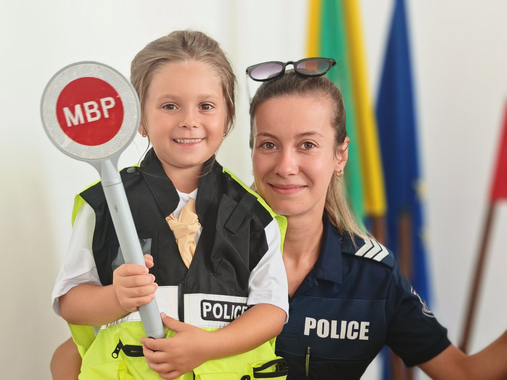

Детско полицейско управление
The Children’s Police Department
Превантивна образователна програма на МВР с двугодишен курс на обучение. Днес в страната работят 154 детски полицейски управления, в които се обучават 3213 деца.
A preventive education programme of the Ministry with a two-year course. Today 154 Children’s Police Departments operate across the country, training 3,213 children.
Програмата е насочена към опазване на живота, здравето, правата и имуществото на децата, към формиране на умения за безопасно поведение и към изграждане на отговорно отношение към обществото и законите. Чрез достъпни и интерактивни занимания, практически упражнения и срещи с полицейски служители децата придобиват знания за личната безопасност, за безопасността на движението по пътищата, за превенцията на престъпността и противообществените прояви, както и за правилните действия при рискови ситуации.
The programme aims to protect children’s lives, health, rights and property, to build skills for safe behaviour and to form a responsible attitude towards society and the law. Through accessible, interactive sessions, practical exercises and meetings with police officers, children learn about personal safety, road safety, crime prevention and the right thing to do in risky situations.
Основен акцент е възпитаването на дисциплина, отговорност, уважение към правилата, нетърпимост към противоправните деяния и готовност за оказване на помощ. Участниците се запознават с дейността на различни полицейски структури и изграждат доверие към служителите на реда и към институциите в България.
The main emphasis is on discipline, responsibility, respect for the rules, intolerance of unlawful acts and a readiness to help. Participants get to know the work of the various police structures and build trust in officers and institutions.
През октомври 2026 г. стартира обучението на шестата група доброволци. В откритите 154 детски полицейски управления към районните управления на ОДМВР в страната и в едното ДПУ в Специалното училище за деца с увреден слух в София, което се управлява от служители на ГДНП, обучението продължава до май 2027 г.
In October 2026 the sixth group of volunteers began their training. In the 154 Children’s Police Departments attached to the regional police units across the country, and in the one at the Special School for Children with Impaired Hearing in Sofia run by National Police officers, teaching continues until May 2027.

Видео: „Доброволци от Детското полицейско управление във Велинград създадоха обучителен клип“, публикувано в канала znamee Pazardjik.Video: “Volunteers from the Children’s Police Department in Velingrad made a training clip”, published on the znamee Pazardjik channel.